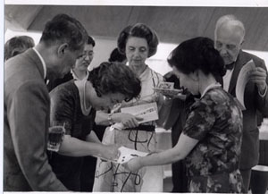
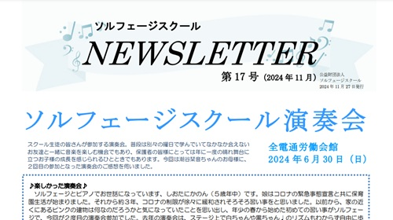
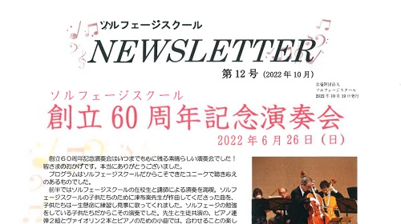

- Q1 ソルフェージ って??
- Q2 アンサンブルは大切
- Q3 スタインウェイピアノ
- Q4 #と♭
- Q5 まるちゃん、しろちゃん??
Q1 Solfègeという単語は一般的に「ソルフェージュ」と読まれることが多いですが、当スクール名が「ソルフェージュ」ではなく「ソルフェージ」なのはなぜですか？
「ソルフェージュ」と「ソルフェージ」の発音を比較したとき、普通「ジュ」を発音するときにはここに力が入り重くなります。「ジ」はそれよりも軽く発音されます。フランス語の発音では最後の「ジュ」あるいは「ジ」の所はひじょうに軽く無重量で空中に消えていく感じに発音されるので、「ソルフェージ」のほうがフランス語の発音に近くなります。
かつて、ソルフェージスクール創立者である大村多喜子先生が「ソルフェージ」と発音したことを、フランスの著名なピアニストであり林紀子先生（ソルフェージスクール創立当時からのメンバーであり、林さち子先生のお母様）の先生であったRobert Casadesusが褒めてくださったことがありとても嬉しかった、と聞いたことを覚えています。
| ※３階ホールへ上る階段の途中に、Robert Casadesusご夫妻がソルフェージスクールを訪問されたときの写真が飾ってあります。皆さん見たことがありますね！手前は左から、吉村順三先生（建築家で大村多喜子先生のご主人）大村多喜子先生、田中園子先生 |  |
Q2 ソルフェージスクールでは個人レッスンだけでなく、アンサンブルを大切に考えています
普通、器楽を学ぶときは基本的な技術のほかにはほとんどソロ（独奏）のための曲を学び、なかなかほかの人と一緒に（アンサンブル）合わせて楽しむ機会がありません。アンサンブルの楽しみを知らないなんてとてももったいないこと！ ソロの場合は自分が思うように弾いても問題は起こりませんが、ほかの人と一緒に弾く場合にはそれぞれが自分の思うように弾いたのではすぐに曲は先に進まなくなり頓挫し、バラバラになってしまいます。みんなが楽しく一緒に合わせるためには全員が同じ拍を感じて弾くことが必須です。そこのところをソルフェージスクールでしっかりと小さい頃から身につけておくと、意識せずとも自然と拍を感じて弾くので最初から自然にアンサンブルを楽しむことができます。ソロの曲以外に素晴らしい曲がそれはそれはたくさんあるので音楽を楽しめる世界が何十倍何百倍にも広がります！
Q3 ソルフェージスクールのスタインウェイはどのようなピアノなのでしょうか
ソルフェージスクール3階のホールには、2台のグランドピアノが設置してあります。そのうちの1台、スタインウェイ。
世界中のコンサートホールで使われ、多くのピアニストから絶大な人気を誇る世界最高峰のピアノとして知られています。

♪ 現代では珍しい艶消し塗装仕上げのコンサートピアノ
スタインウェイのフルコンサートピアノには、艶出し塗装仕上げのものと艶消し塗装仕上げのものがあります。
現在通常販売されているフルコンサートピアノは全て黒色艶出塗装仕上げのピアノとなっていますが、今から数十年前までは、日本では長い間艶消し塗装仕上げのピアノが販売されていました。
（また、木材の質については当時のものの方が良く、修繕して状態を維持する価値は十分にあるそうです。）
ソルフェージスクールにあるスタインウェイは1983年に縁あって神戸からやってきた、艶消し塗装仕上げのもの。
光沢を抑えた静謐な佇まいは、スクールの雰囲気に寄り添ってくれているかのようです。
♪ セミコンサートグランドピアノ「C-227」モデル
ソルフェージスクールのスタインウェイは「C-227」というモデルのもので、同じくスタインウェイのD-274モデルとともにコンサートピアノの最高峰と謳われています。
大ホールでのフルコンサートに使用されるDモデルに対し、Cモデルは中・小規模のホールに向いており、透明感溢れる高音から深く包み込まれるような低音まで、多彩な響きが特徴的で、迫力あるフォルテも繊細なピアニシモも美しく奏でることができます。
Q4 ソルフェージのレッスンでは#と♭のついた音をオリジナルの読み方で習います。その理由を教えてください
ソルフェージとは、もともとはそれぞれの音符をドレミを使って声に出して歌うこと（solfègeの言葉の中にsol とfaが入っています）を指します。そのときにシャープやフラットのついた音をドシャープとかシフラットと読むのでは間に合わないことがあるし、歌うのも大変です。そこで創立時の先生達はド、レ、ミにシャープやフラットがついている場合でも「単音節」になるように考え、シャープの付いた音はイで終わる呼び方（ファ →フィ、ソ→スィ）,フラットの付いた音はウで終わる呼び方（シ→シュ、ミ→ム）を考えました。例外も少しありますが。これならたくさん「変化記号」が付いていてもスラスラと歌えます！
【ここで問題です！】
これはなんの曲でしょう？
♪ミリミリミシレドラ♪（ヒント：リはレ♯）
（答えは下に。最後まで読んで答え合わせをしてみましょう♪）
ソルフェージスクール以外でも似たような読み方をしているところはあるようです。
Q5 ソルフェージスクールの独自の、まるちゃん（全音符）・しろちゃん（二分音符）くろちゃん（四分音符）・はねちゃん（八分音符）のネーミングはどのように考案されたのでしょう
ソルフェージスクールが創立時から用いているMarie ChassevantによるSOLFÈGE DE L’ENFANT(1880年出版)のお話の中に出てくる小鳥たちの呼び名を日本語に変えたものがまるちゃん、しろちゃん、くろちゃん、はねちゃんです。（フランス語では、Ronds, Blanchs, Noire, Croche ）この本は建築家Antonin Raymond 夫人のNoemiさんが子供の頃ソルフェージを学んだときに使った本で、ソルフェージスクールの大事な宝です。(ソルフェージスクールにはSOLFÈGE DE L’ENFANT II からしかなくて初めのお話が書かれているIはどこに行っちゃったのでしょう？）いろいろと調べたら、Marie Chassevantは教育者としてアメリカでもドイツでもよく知られている人だということがわかりました。
また、検索画像でソルフェージェットのオリジナル（？）も出てきました！私たちが使っている赤い箱のソルフェージェット（この名前はわれわれ独自のもの）ととても良く似ているのでびっくりしました。というのは、私たちのソルフェージェットはMrs. Raymondが記憶を辿り伝えてくださったのを吉村順三先生がデザインして作ったもので、今回検索で出てきた画像のことは全く知らなかったのです！まだインターネットなどはなかった1960年代の話です。連想ゲームがとてもうまくいったケース？
| 左: ソルフェージェットのオリジナル（？）と 右: 私たちが使っているソルフェージェット本当によく似ていますね！ | |
| 左: 当スクールで1977年～89年に発行していた「ソルフェージ音楽」 右: 現在もスクールで使用しているソルフェージ教本 |
ソルフェージスクールができる前、きっと大村先生は音楽の基礎を教える学校についての考えや希望を音楽に造形の深いMrs.Raymondに話したのでしょう。そうしたらMrs.Raymondは自分が子供のころに受けたMarie Chassevantの教育についてご本（その後 アメリカに移住、そして日本に来られるときもずっと持っておられたことがまた奇跡的！）を示し話してくださったのです。そして、ご自分が小さいときに使った教本をくださり、ソルフェージェットの誕生のもととなる記憶を辿ってのお話もしてくださったのです。それはソルフェージスクールの創立に関わった林紀子先生や石田昌孝先生（石田先生については次ページにて後述します）も子供たちが楽しく自然に音符や読譜のための基礎を教えるのにとても良いメソードだということで、さっそくに「音楽のおばさんのお話」を小さな子供向けに使い、現在使われているChassevant I, II,III の教本も独自に編纂、印刷して使用することにしました。Mrs.Raymondが小さいときに受けた音楽の授業をずっと覚えていて教本も大事に保管しておられたということはそれがよっぽど記憶の中で強く残っていたのでしょう。それをソルフェージスクールが受け継ぎ今でも生き生きと伝えられているのです。
父は数学者。ピアニスト、歌手。パリに於いて音楽教育に目覚め、Marie Pape-Carpentier とFriedrich Froebelの著書から影響を受ける。1895-1912 ジュネーブ音楽院で子供にソルフェージを教える。そのメソードはスイス、その他のヨーロッパで高く評価され多くの音楽教師を輩出。簡単な絵や特別仕立ての鍵盤を用いて遊び心のある方法を提供した。そのメソードは1970年代まで使われた*。
(* ソルフェージスクールでは今も健在です！)
問題の答え：「エリーゼのために」
毎年 3 月・10 月の年 2 回発行していた「ソルフェージスクール新聞」ですが、イベントのご報告や今後の予定などの最新情報を、よりリアルタイムにお知らせできるよう、発行回数を増やすことにしました。 「ソルフェージスクール NEWSLETTER」と名前もリニューアルし、コンパクトで充実した紙面にしていきますので、引き続きよろしくお願いいたします。
|

|
NEWSLETTER 第17号 2024年 11月27日発行イベント報告: ソルフェージスクール演奏会, 夏季合宿 in 飯綱高原, ちびっこコンサート, おさらい会 |
|
|
NEWSLETTER 第15号 2024年 2月14日発行
イベント報告: ちびっこコンサート, おさらい会, 楽しくアンサンブル, クリスマスコンサート |
|
|
NEWSLETTER 第14号 2023年 10月11日発行
イベント報告: ソルフェージスクール演奏会, 夏季合宿 in 軽井沢 |
|

|
NEWSLETTER 第12号 2022年 10月19日発行
イベント報告: 創立60周年記念演奏会 |
|
|
NEWSLETTER 第4号 2020年 07月22日発行
オンラインレッスンという新しいかたち: 音楽教育の在り方について改めて考えるきっかけ |
|
|
NEWSLETTER 第3号 2020年 04月25日発行
ソルフェージスクールのベースにあるもの: 吉村隆子先生がソルフェージスクールの特徴についてお話 |

|
新聞2019年春夏号 2019年 10月09日発行
|

|
新聞2018年秋冬号 2019年 3月14日発行
|

|
新聞2016年春夏号 2016年 10月25日発行
|

|
新聞2015年秋冬号 2016年 3月15日発行
|

|
新聞2015年春夏号 2015年 10月10日発行
|